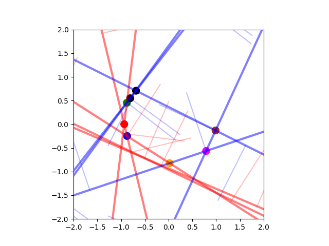

Note
Click here to download the full example code
Halfplane Intersection¶
- 
Out:
4.863739013671875e-05 s
[[-0.93431431 0.00156417]
[-0.87879287 0.45330025]
[-0.87416128 -0.24902888]
[ 0.02140872 -0.82265059]
[ 0.78939369 -0.56480892]
[ 0.9883848 -0.13186833]
[-0.68587585 0.70731529]
[-0.80932188 0.54850633]]
0.0001010894775390625 s
[[-0.80932188 0.54850633]
[-0.87879287 0.45330025]
[-0.93431431 0.00156417]
[-0.87416128 -0.24902888]
[ 0.02140872 -0.82265059]
[ 0.78939369 -0.56480892]
[ 0.9883848 -0.13186833]
[-0.68587585 0.70731529]]
print(__doc__)
import numpy as np
from distance3d import hydroelastic_contact, benchmark
from distance3d.hydroelastic_contact._halfplanes import intersect_two_halfplanes, point_outside_of_halfplane, cross2d
def intersect_halfplanes(halfplanes):
# source: https://cp-algorithms.com/geometry/halfplane-intersection.html#direct-implementation
angles = np.arctan2(halfplanes[:, 3], halfplanes[:, 2])
halfplanes = halfplanes[np.argsort(angles)]
result = []
for hp in halfplanes:
while len(result) >= 2:
p = intersect_two_halfplanes(result[-2], result[-1])
if p is not None and point_outside_of_halfplane(hp, p):
del result[-1]
else:
break
while len(result) >= 2:
p = intersect_two_halfplanes(result[0], result[1])
if p is not None and point_outside_of_halfplane(hp, p):
del result[0]
else:
break
parallel_halfplanes = len(result) > 0 and abs(cross2d(result[-1][2:], hp[2:])) < 1e-6
if parallel_halfplanes:
opposite = np.dot(hp[2:], result[-1][2:]) < 0.0
if opposite:
return None
new_halfplane_leftmost = point_outside_of_halfplane(hp, result[-1][:2])
if new_halfplane_leftmost:
del result[-1]
result.append(hp)
else:
continue
else:
result.append(hp)
while len(result) >= 3:
p = intersect_two_halfplanes(result[-2], result[-1])
assert p is not None
if point_outside_of_halfplane(result[0], p):
del result[-1]
else:
break
while len(result) >= 3:
p = intersect_two_halfplanes(result[0], result[1])
assert p is not None
if point_outside_of_halfplane(result[-1], p):
del result[0]
else:
break
if len(result) < 3:
return None
else:
polygon = [
intersect_two_halfplanes(result[i], result[(i + 1) % len(result)])
for i in range(len(result))]
return polygon
random_state = np.random.RandomState(0)
n_halfplanes = 10
x = random_state.rand(n_halfplanes) * 2.0 * np.pi
p = np.column_stack((np.cos(x), np.sin(x)))
p += random_state.rand(*p.shape) * 0.1
angles = np.arctan2(p[:, 1], p[:, 0])
p = p[np.argsort(angles)]
pq = p[np.arange(n_halfplanes)] - p[np.arange(n_halfplanes) - 1]
halfplanes = np.hstack((p, pq))
timer = benchmark.Timer()
timer.start("hydroelastic_contact.intersect_halfplanes")
polygon = np.asarray(hydroelastic_contact.intersect_halfplanes(halfplanes))
print(f"{timer.stop('hydroelastic_contact.intersect_halfplanes')} s")
print(polygon)
timer.start("intersect_halfplanes")
polygon2 = np.asarray(intersect_halfplanes(halfplanes))
print(f"{timer.stop('intersect_halfplanes')} s")
print(polygon2)
hydroelastic_contact.plot_halfplanes_and_intersections(
halfplanes, polygon, xlim=(-2, 2), ylim=(-2, 2))
hydroelastic_contact.plot_halfplanes_and_intersections(
halfplanes, polygon2, xlim=(-2, 2), ylim=(-2, 2))
Total running time of the script: ( 0 minutes 0.286 seconds)